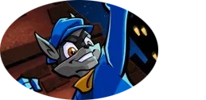
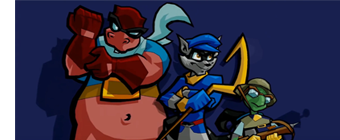
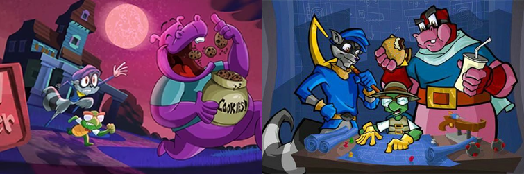
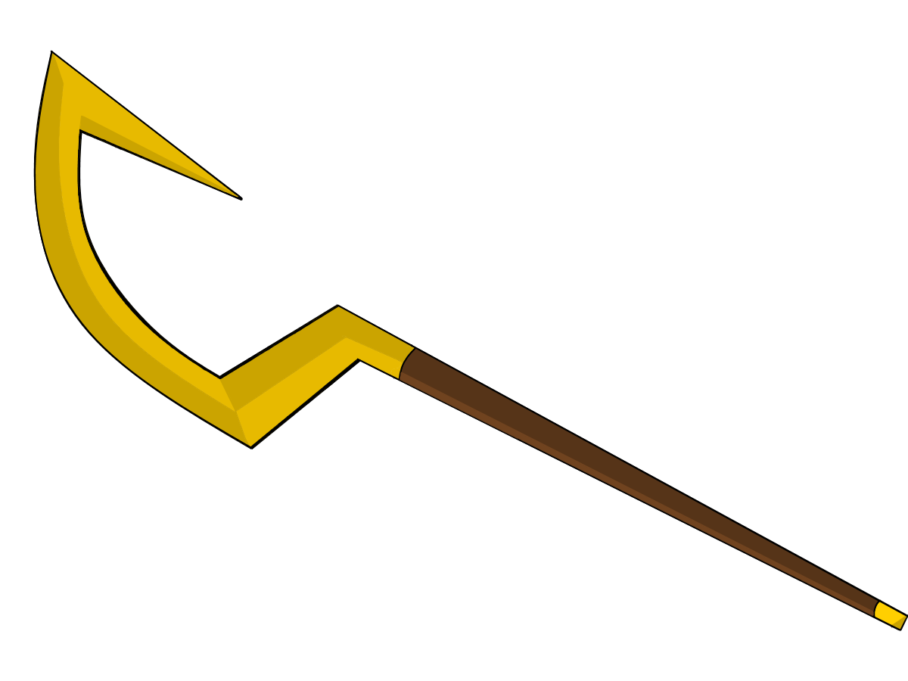

"Cada persona es distinta. Aunque yo forme parte de todo esto y sea un Cooper, al final... Sólo soy yo: Ni Henriette, ni Thaddeus, ni Slytunkhamen, ni Rioichi, NI mi padre... Sólo soy Sly."- Sly Cooper
Sly Cooper, el ladrón, es el protagonista de la saga de videojuegos Sly Cooper y el último Cooper conocido además de ser el líder de la Banda Cooper.
Sly nació en 1984 en un linaje de maestros del robo conocido como el Clan Cooper, bajo la tutela de su padre Conner Cooper. Cuando la banda de su padre realizaba trabajos Sly pasaba tiempo con el amigo de su padre y miembro de la banda de este, Jim McSweeney. Cuando Sly tenía solo 3 años su padre lo llevó a un Museo de Costa Liguria en Italia donde se encontraron con McSweeney; a quien Conner le entregó el mapa de la cámara de Cooper para esconderlo en el museo. Conner Cooper y su esposa se convirtieron en dueños de una granja donde criaron juntos a su hijo Sly, quien creció aprendiendo sobre la historia de su familia, sus técnicas secretas, logros y sobre que él seguiría los pasos de sus antepasados; heredando el libro conocido como Latronius Mapachibus a la edad de 8 años. La noche que Sly recibiría el libro, la banda de Los Cinco Malvados irrumpió en el hogar. Su padre luchó para proteger a su esposa e hijo pero fue asesinado junto con su mujer por esta despiadada banda. Los Cinco Malvados procedieron a saquear la casa hasta que encontraron el libro. Luego lo desgarraron y repartieron cada hoja entre ellos; retirándose a sus respectivas bases de operaciones para continuar con sus delitos cada uno por su parte.
El pequeño Sly fue testigo de todo el evento desde su escondite en un armario, junto al bastón de su padre. La policía lo encontró y fue enviado a un orfanato, donde conoció a Bentley, un genio tortuga, y Murray, cómicamente un musculoso hipopótamo.
Al crecer y dejar el Orfanato, Sly y su pandilla se propusieron recuperar el legado del Clan Cooper y honrar al difunto Conner Cooper, convirtiéndose en la mejor banda de ladrones de la época.
Para ser sinceros, el motivo por el que tomé este personaje no es precisamente por su ejemplo de ladrón, ya que es algo no muy admirable que digamos.
El motivo principal, viene siendo porque este fue uno de los tantos videojuegos que jugué en mi infancia, recuerdo que pasaba horas tratando de descifrar que era lo que tenía que hacer (dado que el juego era en inglés y cuando lo jugaba aún era pobre mi entendimiento de este), horas y horas de diversión sin duda alguna.
A pesar que es uno de los que pertenecen a mi infancia, con el pasar de los años fui dándome cuenta de más cosas por las cuales era de admirar:
- Nunca se rinde, siempre busca la manera de sobrellevar los problemas que le vienen, aún estos parezcan estar muy fuera de su liga.
- Allegado a sus amigos, para el lo más importante es la amistad, estos son aún más importantes que las mismas riquezas para él.
- Un tipo bastante relajado, siempre mantiene la cabeza fría ante todo.
- Un buen sentido del humor, no siempre se busca la completa seriedad en un protagonista, algún buen chiste de vez en cuando siempre viene de maravilla.
- A pesar de lo que es, cuando tiene la oportunidad definitivamente nunca deja pasar la oportunidad de hacer del bien.
Un personaje que en mi opinión puede ser bastante profundo en ocasiones, y sin mencionar que su juego en si brinda muchas horas de diversión, con situaciones de acción siempre con un toque humorístico, con un lore de los mejores que yo he visto en videojuegos, si me lo preguntan, es una obra maestra y altamente recomendable.
